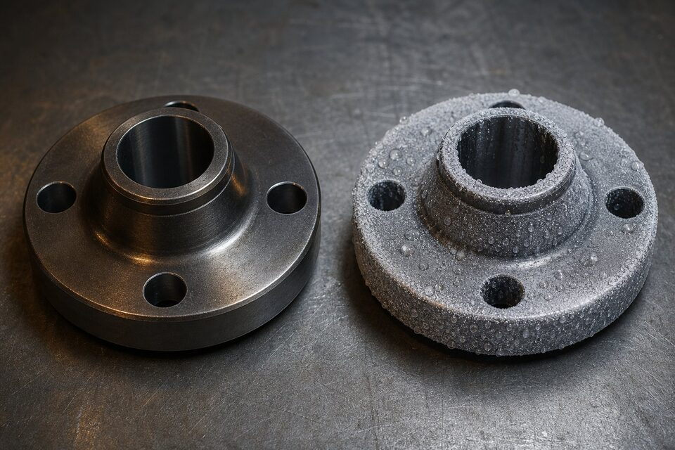

چرا این مقایسه اهمیت دارد؟
فلنجها و فیتینگهای فورج کربنی پرکاربردترین اجزای اتصالاتی خطوط هستند. در دماهای محیطی و بالاتر، فورج دمای محیط انتخاب پیشفرض است؛ اما به محض ورود به سرویسهای زیر صفر، باید سراغ فورج دمای پایین با چقرمگی اثباتشده رفت. انتخاب اشتباه در این مرز، ریسک شکست ترد و توقف پروژه را به همراه دارد.

جدول مقایسه جامع
| معیار | فورج دمای محیط | فورج دمای پایین |
|---|---|---|
| کاربرد اصلی | دمای محیط و بالاتر | سرویسهای زیر صفر و برودتی |
| تست ضربه | معمولاً ندارد | الزامی در دمای مشخصه |
| حداقل استحکام کششی | حدود ۴۸۵ مگاپاسکال | حدود ۴۸۵ مگاپاسکال |
| حداقل حد تسلیم | حدود ۲۵۰ مگاپاسکال | حدود ۲۵۰ مگاپاسکال |
| کنترل شیمیایی | استاندارد | سختگیرانهتر |
| قیمت نسبی | اقتصادیتر | بالاتر |
| حک متریال روی قطعه | نماد متریال دمای محیط | نماد متریال دمای پایین |
نقش تست ضربه
چقرمگی در سرما با تست ضربه اثبات میشود؛ تستی که در آن نمونهای از متریال در دمای مشخصه شکسته و انرژی جذبی آن اندازهگیری میشود. فورج دمای پایین باید این تست را با موفقیت گذرانده باشد و نتیجه در گواهی مواد قابل ردیابی باشد. دمای انجام تست باید با دمای طراحی فلز در پروژه هماهنگ شود.
عملیات حرارتی
- فورج دمای محیط معمولاً در وضعیت فورج یا نرمالایز عرضه میشود.
- فورج دمای پایین با عملیات حرارتی مناسب برای رسیدن به چقرمگی لازم تحویل میشود.
- وضعیت عملیات حرارتی باید در گواهی مواد ذکر شود.
- در سفارشهای حساس، نوع عملیات حرارتی را صریح درخواست کنید.
معیارهای انتخاب
- دمای طراحی فلز را از مدارک فرایندی استخراج کنید.
- برای دماهای زیر صفر، فورج دمای پایین با تست ضربه انتخاب کنید.
- برای دماهای محیطی و بالاتر، فورج دمای محیط کافی است.
- پیچ و مهره و گسکت را همجنس با شرایط دمایی انتخاب کنید.
- نتایج تست را در گواهی مواد کنترل کنید.
کاربردهای رایج در پروژه
- فلنجها و فیتینگهای فورج خطوط فرایندی پالایشگاه و پتروشیمی.
- بدنه شیرآلات کربنی در سرویسهای عمومی.
- اتصالات خطوط برودتی و هوای سرد با گرید دمای پایین.
- نقاط اتصال تجهیزات در واحدهای گاز مایع و تبرید.
در پروژههایی که دمای خط در طول سال یا بین حالتهای کاری تغییر میکند، بدترین حالت دمایی مبنای انتخاب متریال قرار گیرد؛ نه دمای عادی بهرهبرداری.
اشتباههای رایج در سفارش و تحویل
مقایسه فنی این دو گرید ساده است؛ اما در سفارش و تحویل، چند اشتباه رایج وجود دارد که هر سال هزینههای قابل توجهی ایجاد میکنند و بهتر است از ابتدا شناخته شوند. اولین اشتباه، سفارش مبهم است: وقتی در برگه مشخصات فقط عبارت فورج کربنی نوشته شود و گرید صریح ذکر نگردد، تامینکننده ممکن است گرید ارزانتر را تحویل دهد و در بازرسی ورودی مشخص شود محموله با نیاز پروژه همخوانی ندارد. دوم، نادیده گرفتن کلاس دمایی است؛ گرید فورج دمای پایین خود کلاسهای مختلفی دارد و دمای تست ضربه در هر کلاس متفاوت است، بنابراین ذکر کلاس به همراه دمای مورد انتظار ضروری است. سوم، عدم تطبیق علامتگذاری روی قطعه با مدارک است؛ هر فورج باید با حکاکی شامل گرید، سازنده و مشخصات علامتگذاری شود و در تحویل، این علامتها باید با گواهی آزمون کارخانه تطبیق داده شوند. چهارم، مساله جایگزینی ناخواسته در انبار است؛ ظاهر قطعات فورج کربنی و کمآلیاژ بسیار شبیه هم است و بدون علامتگذاری رنگی و جداسازی فیزیکی، امکان جابجایی اشتباه در انبار وجود دارد؛ رویه درست، کدگذاری رنگی بر اساس گرید و نگهداری هر گرید در قفسه جداگانه است. پنجم، خرید اقلام کوچک بدون گواهی مناسب است؛ برای اقلام حساس، گواهی آزمون با نتایج واقعی تست الزامی است و پذیرش گواهینامههای کلی بدون ارجاع به شماره ذوب، ریسک را بالا میبرد. ششم، عدم توجه به وضعیت عملیات حرارتی در زمان سفارش است؛ برخی پروژهها فورج را در وضعیت خاصی میخواهند و اگر این موضوع ذکر نشود، ممکن است قطعه با وضعیتی تحویل شود که برای عملیات بعدی مناسب نباشد. در نهایت، در پروژههای دمای پایین، تست ضربه باید در دمای مشخصشده انجام و نتایج آن به همراه هر محموله تحویل گردد؛ پذیرش محموله بدون این نتایج، عملا پذیرش کالای تاییدنشده است.
جمعبندی
مرز انتخاب این دو متریال، دمای طراحی است. با ذکر دقیق دما در استعلام و کنترل گواهی مواد، از ورود متریال نامناسب به خطوط برودتی جلوگیری کنید.
سوالات رایج
مهمترین تفاوت این دو متریال چیست؟
الزام تست ضربه. فورج دمای پایین ذاتاً با تست ضربه در دمای منفی تحویل میشود و چقرمگی آن در سرما تضمین شده است؛ فورج دمای محیط در شرایط عادی چنین تستی ندارد.
آیا میتوان فورج دمای محیط را در سرما استفاده کرد؟
بدون ارزیابی و تست ضربه خیر. در دماهای زیر صفر، ریسک شکست ترد مطرح است و کدها معمولاً متریال با چقرمگی اثباتشده را الزامی میدانند.
خواص مکانیکی این دو چه تفاوتی دارد؟
حداقلهای استحکام بسیار نزدیک هستند و تفاوت اصلی در چقرمگی و کنترلهای ساخت است. بنابراین انتخاب را دمای سرویس تعیین میکند، نه استحکام.
چطور از متریال تحویلی مطمئن شویم؟
گواهی مواد با شماره ذوب را با حک روی قطعه تطبیق دهید و در صورت تردید، تست شناسایی مثبت متریال انجام دهید. ذکر دمای طراحی در استعلام نیز از پیشنهاد اشتباه جلوگیری میکند.
مطالب مرتبط
- فولاد فورج کربنی (ASTM A105)؛ مشخصات و نکات خرید
- استاندارد فلنجهای جوشی (ASME B16.5)
- راهنمای جنس و متریال فلنج صنعتی
- راهنمای کامل گواهی مواد و تست
- راهنمای تست شناسایی مثبت متریال
با ذکر دمای طراحی سرویس، متریال مناسب (دمای محیط یا دمای پایین با تست ضربه) به همراه گواهی مواد کامل پیشنهاد میشود.
مشاهده صفحه محصول ← ثبت RFQ همین محصولتامین این تجهیزات را به پیشرو تجهیز فرتاک بسپارید
شرکت پیشرو تجهیز فرتاک تامینکننده تخصصی تجهیزات صنعتی برای پروژههای نفت، گاز، پتروشیمی، فولاد و نیروگاهی است. برای دریافت پیشنهاد فنی و قیمت، استعلام (RFQ) خود را ثبت کنید تا کارشناسان مهندسی فروش در کوتاهترین زمان پاسخ دهند.
- تامین فلنج فورجفلنج کربنی و دمای پایین با گواهی مواد
- تامین تجهیزات پایپینگاتصالات همجنس برای خطوط برودتی و فرایندی